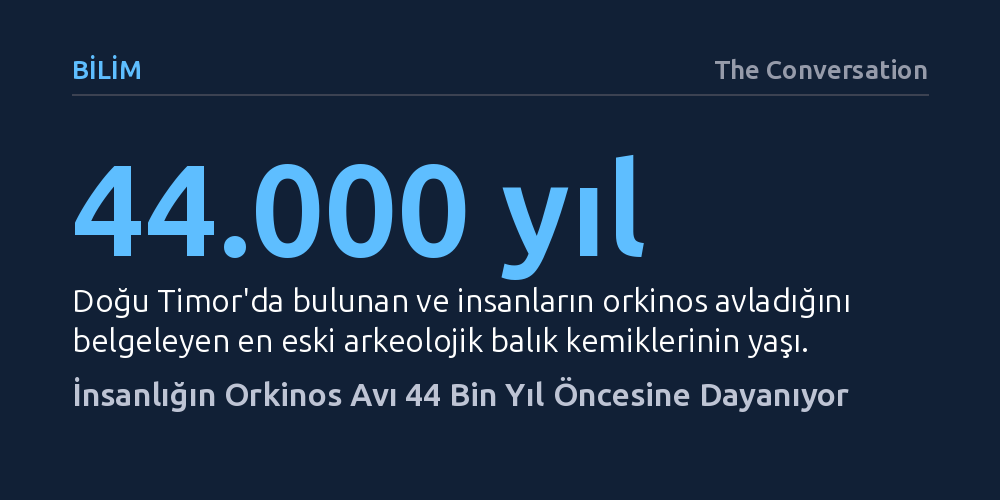

BILIM · The Conversation · 2026-10-13
Arkeolojik bulgular, insanların 44 bin yıldır orkinos avladığını ve bu pratiğin Pasifik'ten Akdeniz'e uzanan zengin bir geçmişi olduğunu gösteriyor. Ancak günümüzün endüstriyel avcılığı, antik toplumların binlerce yılda tükettiği balık miktarını artık tek bir yılda okyanuslardan çekiyor.
Deniz koruma hedeflerinin sadece 1950 sonrasına bakılarak belirlenmesinin yanıltıcılığını ve orkinos popülasyonlarındaki çöküşün tarihsel arka planını anlamak açısından ezber bozuyor.

Günümüzde süpermarket raflarındaki ucuz konserve kutularından Tokyo müzayedelerinde milyonlarca dolara satılan lüks suşi dilimlerine kadar orkinos, yıllık 40 milyar dolarlık devasa bir küresel endüstrinin merkezinde yer alıyor. Ancak insanların okyanusların bu en hızlı ve güçlü yırtıcılarıyla kurduğu bağ, modern balıkçı filolarından çok daha eskiye uzanıyor. Biyolog ve arkeologlardan oluşan uluslararası bir araştırma ekibi, 18 bilim insanının katkısıyla yürüttüğü çalışmada, orkinos avcılığının sanılanın aksine on binlerce yıllık köklü bir insanlık serüveni olduğunu belgeledi.
İnsanların orkinos avladığına dair en eski somut kanıt Güneydoğu Asya'da, Doğu Timor'da bulundu. Yaklaşık 44 bin yıl öncesine tarihlenen balık kemikleri, muhtemelen kıyıya yakın geçen derin su kanallarından yararlanan ilk insanların çizgili orkinos yakaladığını gösteriyor. Dünyanın diğer bölgelerinde benzer kalıntılar ağırlıklı olarak son 10 bin yılda ortaya çıksa da bu bulgu, insanların açık deniz avcılığı becerisinin derin buzul çağlarına kadar uzandığını kanıtlıyor.
Farklı coğrafyalardaki arkeolojik kazılar, kaya resimleri ve antik yazılı kayıtlar, orkinos avcılığının yerel koşullara göre nasıl çeşitlendiğini ortaya koyuyor. Japonya ve Kore'de en az 7 bin yıl önce başlayan orkinos avı, bölgenin zengin mutfak kültürünün temellerini attı. Cebelitarık'taki Neandertal yerleşimlerinde 26 bin yıl öncesine ait orkinos kemiklerine rastlansa da bunların kıyıya vuran balıkların toplanmasıyla elde edildiği düşünülüyor. Buna karşılık, Yunanistan'daki Kiladha Koyu'nda 9 bin ila 11 bin yıl öncesine ait mağaralarda bulunan binlerce kemik, planlı ve yerleşik bir avcılık geleneğini belgeliyor.
Antik Akdeniz toplulukları olta, zıpkın ve topografik avantajları kullanan kıyı tuzaklarıyla donanmıştı. Orkinos öylesine saygı duyulan ve hayati bir besin kaynağıydı ki Antik Yunanlar bu balığı tanrı Poseidon'a adak olarak sunuyordu. Yaklaşık 3 bin yıl önce Akdeniz'de mavi yüzgeçli orkinosun göç yollarını hedefleyen ticari tuzak sistemleri kuruldu ve bu yöntemler 16. yüzyıla gelindiğinde yılda on binlerce ton balığın yakalandığı organize bir ağa dönüştü.
Pasifik'in diğer ucunda, Kuzey Amerika'nın kuzeybatı kıyısındaki Nuu-chah-nulth yerlileri ise 5 bin yılı aşkın süre boyunca benzersiz bir gece avı tekniği uyguladı. Yerli anlatılarına göre, yaz sonlarında suların ısındığı dönemlerde balıkçılar, sudaki biyolüminesans planktonların ışığından faydalanarak fiyortlara açılıyor, karadaki gözcülerin yönlendirmesi ve kanolarda yakılan ateşlerle yüzeye çektikleri 290 kilogramlık dev orkinosları zıpkınlıyordu. Benzer şekilde Güney Kaliforniya kıyılarında da yerli halklar 6 bin yıl boyunca dört farklı orkinos türünü düzenli olarak avladı.
Arkeolojik sahalardaki kemik yoğunluğu incelendiğinde, geçmişteki avcılık ile günümüz arasındaki ürkütücü ölçek farkı netleşiyor. Antik Akdeniz gibi tarihin en yoğun av sahalarında bile binlerce yıl boyunca denizden çıkarılan toplam orkinos miktarı yalnızca birkaç bin tonla sınırlı kalmıştı. Oysa bugün endüstriyel balıkçı filoları, sonar sistemleri ve devasa ağlarla her yıl okyanuslardan milyonlarca ton orkinos çıkarıyor.
Bu karşıtlık, modern balıkçılık yönetimindeki tehlikeli bir yanılgıyı da gün yüzüne çıkarıyor. Bilimsel araştırmaların ve sürdürülebilirlik modellerinin büyük çoğunluğu, orkinos popülasyonlarının tarihsel sağlığını 1950 yılını referans alarak değerlendiriyor. Oysa insan baskısı 1950'de sıfırdan başlamadı. Yine de son 75 yılda yaşanan teknolojik sömürü, doğanın milyonlarca yılda kurduğu ekolojik dengeleri daha önce görülmemiş bir hızla tüketti.
Boyları üç metreyi aşabilen, kırk yıldan uzun yaşayan ve okyanusu birkaç ayda boydan boya geçebilen orkinoslar, yalnızca birer tüketim maddesi değil, tüm deniz ekosisteminin dengesini koruyan ve okyanus sağlığının habercisi olan kritik zirve avcılarıdır. Günümüzde ticari değeri en yüksek türlerden Pasifik mavi yüzgeçli, güney mavi yüzgeçli ve kocagöz orkinos hâlâ tehlike altında veya korunmaya muhtaç kategorilerinde yer alıyor.
Tarihsel kayıtlar, insanların 44 bin yıldır denizleri okuma, balık göçlerini anlama ve yeni av teknikleri geliştirme konusundaki olağanüstü inovasyon yeteneğini gösteriyor. Bugün yapılması gereken, bu kadim inovasyon kapasitesini balıkları daha hızlı tüketmeye değil; uluslararası kotalar, sıkı denetim ve bilimsel yönetim modelleriyle nesillerini korumaya yöneltmektir. Orkinos stokları sanayi öncesi el değmemiş bolluğuna bir daha asla ulaşamayacak olsa da türlerin yok oluşunu engellemek hâlâ insanlığın elinde.